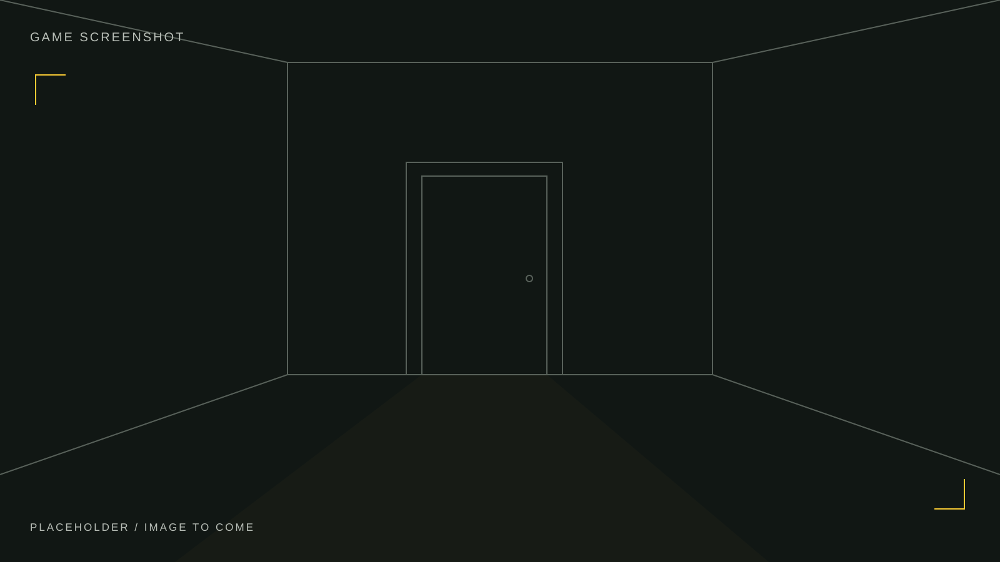
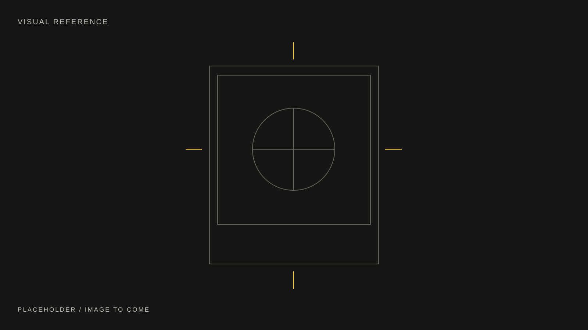

Polaroid of Yesterday
Stills
Screens from the game. Images that shaped it. Photographs made along the way.
← Back to the roomGame screenshots & visual references


Photography for the project

Project photographs will be collected here.